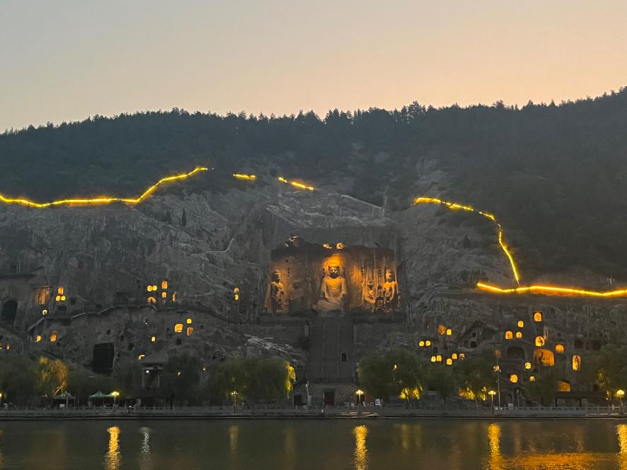
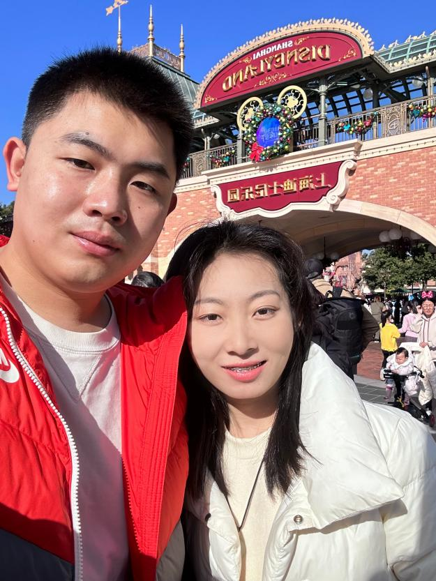
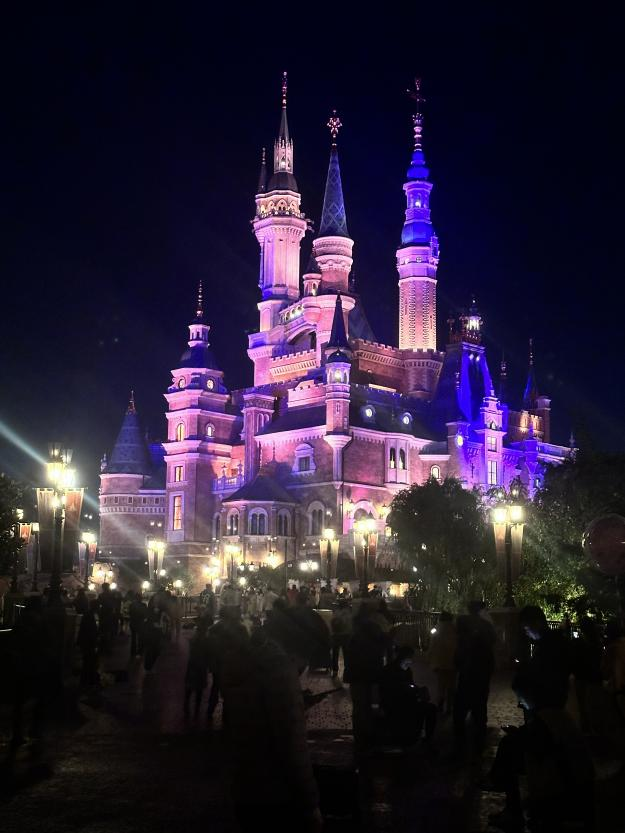
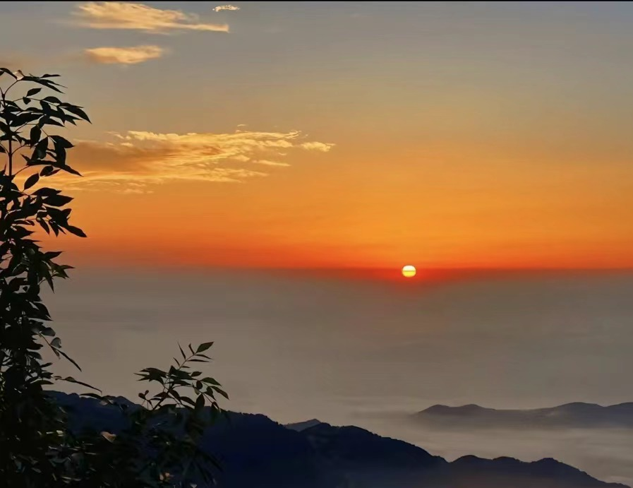

Longmen Grottoes located in Luoyang, China, the Longmen Grottoes are a UNESCO World Heritage Site renowned for their ancient Buddhist sculptures. I was captivated by the magnificent stone carvings and the rich history they represent.
This is the picture I took when I went to Longmen Grottoes:

Shanghai Disney Resort is a magical destination filled with thrilling rides, enchanting attractions, and delightful entertainment. I had an unforgettable time exploring the park and experiencing the Disney magic come to life.
Those are two photos I took when my girlfriend and I went to Disney:

Mount Tai is one of China's Five Great Mountains, boasts stunning natural beauty and profound cultural significance. I hiked to the summit and was rewarded with breathtaking views of the surrounding landscapes.
This is the sunrise picture I took when I went to Mount Tai:
